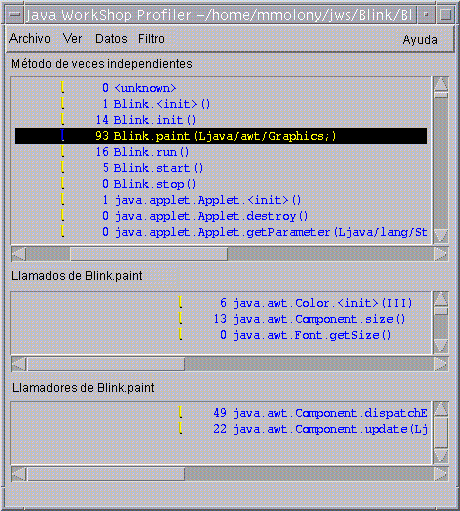

Ejercicio Cuatro: Recopilación de datos de perfil
Este ejercicio muestra cómo ejecutar el proyecto Blink con el perfilador de Java Development Environment. EL perfilador permitirá analizar el rendimiento de su programa para determinar cuánto tiempo se emplea en cada uno de los métodos de los programas y cuántas veces se ejecuta cada uno de los métodos.- Consulte en el administrador de proyectos el nombre del
proyecto actual.
Si el proyecto actual no es Blink, pulse dos veces en el nombre de proyecto. - Inicie el perfilado del proyecto Blink pulsando
en el botón "Perfil"
 en
la barra de herramientas principal de Java Development Environment.
en
la barra de herramientas principal de Java Development Environment.
Aparecerá la ventana "Visualizador de applets". - Espere 45 segundos como mínimo antes de pasar al siguiente paso.
- Finalice la sesión de perfilado seleccionando
"Applet -> Salir", en el visualizador de applets.
Una vez perfilado el programa, aparecerán los datos escritos en el archivo Blink.prof del directorio de origen en la ventana "Perfilador". - En la ventana "Perfilador", seleccione
"Filtro -> Ninguno" para ver los datos de clase del sistema. - Seleccione
"Ver -> Ordenar por nombre" para ver los datos del método en orden alfabético. - Seleccione el método Blink.paint (Ljava/awt/Graphics;).
- Revise los datos de perfil, que serán similares a los que se indican a continuación:
Esto le proporcionará suficientes datos como para generar una visualización de perfil útil.

Los resultados indican que:
- Java Development Environment empleó 93 milisegundos llamando al método Blink.paint (Ljava/awt/Graphics;).
- Blink.paint (Ljava/awt/Graphics;) llama a tres métodos: java.awt.Color.<init> (III), java.awt.Component.size () y java.awt.Font.getSize ().
- Los dos métodos a los que llama el método Blink.paint (Ljava/awt/Graphics;) son: java.awt.Component.dispatchEventImpl (Ljava/awt/AWTEvent;) y java.awt.Component.update (Ljava/awt/Graphics;).
 Lección siguiente:
Lección siguiente:
- Ha terminado las lecciones de este tutorial. El siguiente tutorial es el Tutorial Dos: Edición de atributos del proyecto.